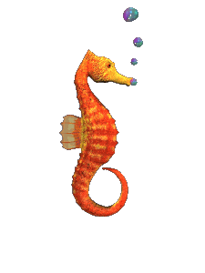
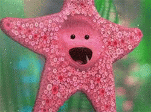

By Sydney Manno
SEAHORSE
Seahorse Fun Facts!
Seahorses swim in pairs with their tails linked together
They swim upright!
Seahorses are able to avoid predators by mimicking the color of underwater plants
Seahorses have no teeth or stomach! They digest food so quickly and are constantly eating in order to stay alive.
They consume 3,000 or more brine shrimp a day!
They are monogamous and mate for life! The Male seahorse is also the one to bear the unborn young. This is so the Female can produce more eggs right away and therefore reproduce quicker.

When Seahorses mate it is considered to be this beautiful dance which includes spinning around, changing colors and swimming side by side. This "dance" can last up to 8 hours.
The Male Seahorses are the ones who carry the unborn young.
This is said to be done so that the female can produce more eggs right away and therefore reproduce quicker. The female usually lays the eggs into a small pouch on the males abdomen. The male holds onto the eggs for about 20 days, giving the babies enough time to develop
Sometimes up to 1,000 babies can be born at once!
Seahorses are usually found in shallow tropical waters within seagrass beds, estuaries, coral reefs, and mangroves. Certain species are found in Pacific waters in North and South America.

To find out more information click HERE